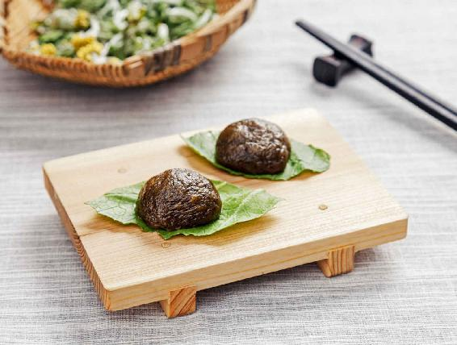
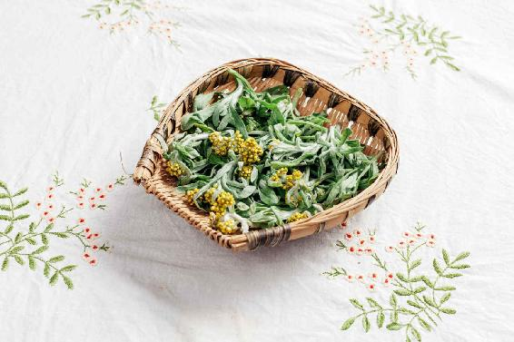
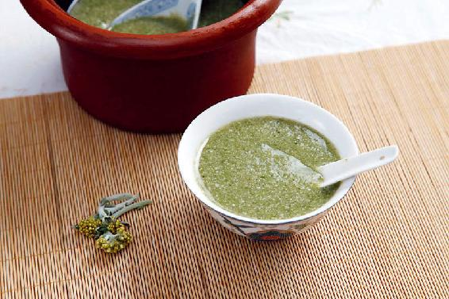

一年之中，清明、白露是两个在时间轴上对称的节气，它们所代表的时令，在四季中是不冷不热、惠风和畅、天朗气清的好日子。
清明这个名字也是二十四节气中最有诗意的一个。清明，纯净澄澈为清，日月照空为明。清明的时候，气清景明，万物皆显，一切都显得非常清新明净，我们的身体也理应如此。
假如我们从立春开始，一直坚持做排毒的工作，坚持打开气的通道，那么，到了清明的时候，也会感到自己的身体非常清明；如果我们冬天的养藏工作没做好，春天的排毒工作也做得不彻底的话，这时候就很容易被流行的各种病毒所侵扰。
清明前后，人体的阳气外泄，各种虫子、病毒也非常活跃——万物皆显，到了清明时节都会出来了。
清明节气期间，我们要多吃一些应季而生的野菜，因为这时候生长的野菜大多具有消炎、抗菌、清肠排毒的功效，可以很好地帮助我们预防春天的流行病。
清明菜和青团（艾粑）是两种应季的美食，常吃可以让我们的身体保持清明，特别是对呼吸道有很好的调理作用。
青团、清明菜这些应季的美食，它们都源于祭祖的风俗。

读者评论：吃了半月清明菜，感觉瘦了，身体也变得轻盈
映山红：清明菜（田艾）吃了足足半个月，不是喝田艾粥就是吃清明果，大便次数多了，感觉瘦了些，身体也变得轻盈了。
陆：今年网购了田艾，做了清明果，味道淡淡的甜，感觉超棒。
清明菜的学名叫鼠曲草，它还有很多的别名，比如田艾，但它不是艾蒿。虽然田艾和艾蒿都属于菊科，也有菊科植物特有的一种香味，但田艾没有艾蒿那么苦，它的高度也比艾蒿矮很多，一般只有巴掌那么高。
田艾最大的特点就是全身布满白色的绒毛，像棉花一样，开的花也是绒绒的、黄黄的，只有小米粒那么大。白色的绒毛衬托着黄花，这个特征是非常好记的。
它的很多别名都跟它的这个特征有关系，比如黄花白艾，这个别名非常形象；还有叫黄蒿、毛耳朵、棉絮头草、黄花籽草、棉花草、棉茧头、白头草、绒毛草、丝绵草、毛毛头草等。
还有一些别名跟它的用途有关，比如清明菜、清明蒿、清明香、糯米饭青等。糯米饭青这个名字也很形象，就是说用它来做糯米饭，也就是乌饭或者青团的一种原料。因此，您只要按它的土名、别名，再对照它的特征去找一找，一定可以找得到的。

用清明菜煮粥，或者煮糖水，有一点要注意：清明菜只需要采下它的嫩苗，然后轻轻地洗干净就可以了，茎上和叶子上覆盖着的白色绒毛，不要去掉，一起煮效果才好。
植物的每一个部分都有它的功效，在食用时要尽量保持完整，这样才能吸收到植物最完整的营养和功效。
清明菜特别适合有呼吸道一类疾病的人吃，对容易感染肺炎、气管炎、支气管炎，或者痰多咳喘的朋友，都有一定的效果。
清明菜对于皮肤表面有问题（一到春天就容易得荨麻疹、青春痘，还有皮肤感染）的朋友也有效果。另外，清明节时吃清明菜对调理高血压也有好处。

清明节这段时间，我们可以煮清明粥，即把清明菜和糯米以1:1的比例下锅煮粥。
人口少的家庭，可以用100克清明菜，100克糯米下锅。下锅前，先把糯米用清水泡一晚上，然后采摘新鲜的清明菜的嫩尖，洗干净切碎，和泡好的糯米一起下锅加水煮成粥就可以了。
如果是给小朋友喝，您可以加一点点糖来调味。
这个粥是全家人都可以喝的，对老年人来说，也特别合适。因为这个粥相对比较清淡，比较容易消化，还可以滋养肝肾。同时，它对于调理老年人的高血压、迎风流泪等问题效果也比较好。
读者评论：喝了田艾水，咳嗽好了
初：前年咳嗽咳了快两个月不好，就是喝了几次田艾煮水好的，谢谢老师！
允斌解惑：田艾用水焯好，放冷冻能长期吃
遁度：老师，田艾用水焯好，放冷冻能长期吃吗？
允斌：可以的。
王晓伟：田艾就是艾灸用的那个艾草吗？
允斌：不是的，和它很像。南方一般市场会有见到。
棒棒猫：老师，田艾可用艾叶代替吗？
允斌：不能哈，它们是不一样的。